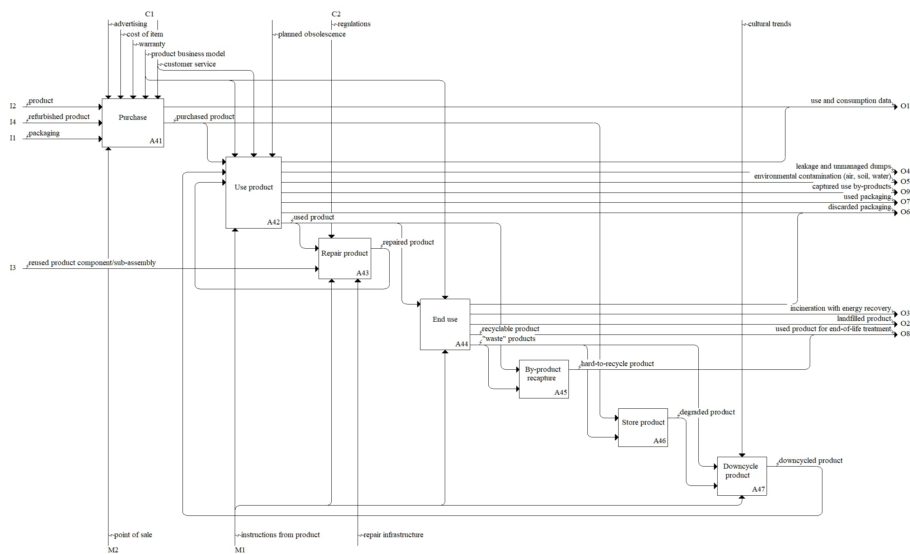

Description
The use and consume stage model consists of the activities carried out by consumers, including purchasing, use, and repair (if possible). Finally, this stage considers what consumers may do with the product at its end of life, such as store it, downcycle it, send it somewhere for processing, or landfill it. A key difference between the use and consume stage in a circular economy model is that consumer behavior impacts what recovery pathways are considered viable for the business. Click the individual Concepts for descriptions and examples of inputs, outputs, controls, and mechanisms relevant to a circular economy.Parent Activity: Use and Consume